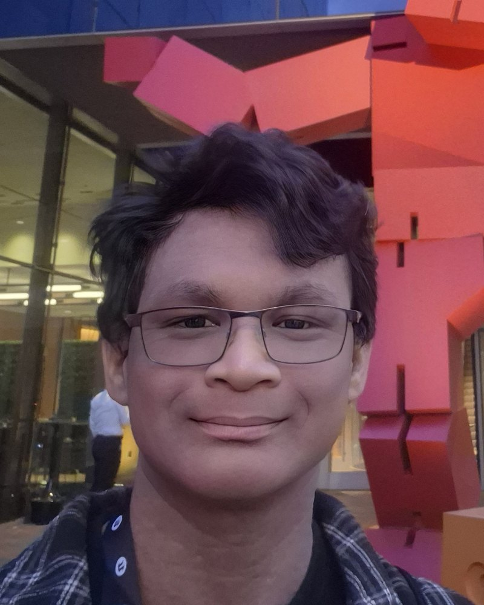

Act I — The Performance
A one-minute horror story
SweetBread, a cinematic made with the team at Coded Arts. I refined the motion-captured performances, lit the scenes, and built the systems that bring them to life.
Refining the performance
Motion capture begins as a raw recording of a real performer — full of jitter, glitches and lost moments. My work is to clean and rebuild that data until the movement reads the way it was actually danced. Each video shows the raw capture beside my cleanup.
Act II — The Music
Design for the stage
Poster and ticket design for a live concert — the scene modelled and rendered in Houdini, then finished as print design in Inkscape.
A real-time visualizer that turns live guitar into responsive visuals inside Unreal Engine — the stage lights up as the music is played. The strings at the top of this page are a small taste of the idea.
Act III — The Craft
Sculpting in 3D
Procedural modelling in Houdini — geometry built from rules, so one idea can become a hundred variations.
Intermission
Artist Statement

I have always walked the line of two worlds. One of structure and logic, studying Math, Physics and Programming. The other, one of creativity and freedom. Craft supplies in my hands, a guitar on my lap, making whatever I wanted to make. For a long time, those always felt like separate things, but Game Art is where they finally met for me.
I remember the first time I delved into the digital art world. When I was fourteen, I followed a tutorial in Blender and spent the whole day working on my dad's old laptop. Then I hit the render button and waited thirteen hours just to watch the single image resolve. I was hooked. When I joined the Digital Media Arts program, I was initially aiming to specialize in animation, but when one of my lecturers left us with a challenge for the first Christmas break, learning Houdini and Unreal Engine, I saw that I could make use of both my passions. Programming AND making art? Where do I sign up? Since then, I delved deeper and deeper into the rabbit hole, successfully getting an internship at Coded Arts. There, I went further into Motion Capture, both performing it myself, cleaning it up and putting it into a scene. When the internship ended, they hired me onto their motion capture team.
If I had any uncertainty before, seeing people play and enjoy the game that my team and I made for our Capstone solidified that I'm on the right path and has spurred me on with even more ideas to bring to life.
The next step, bringing my music into the bundle, tying everything I love into one.
I want people who experience my work to feel joy, laugh, and hopefully have a moment of awe. That's the standard I hold myself to, and the future I'm building towards.
Program Notes
Resume / CV
Education
BFA in Digital Media Arts
University of Trinidad and Tobago
Graduate
Hillview College
Skills
- Unreal Engine — Blueprint systems, lighting, materials, animation
- Houdini — procedural modelling & rendering
- Maya — modelling
- Substance Painter & Designer — texturing
- Motion capture — performance & cleanup
- Captury — markerless motion capture
- DaVinci Resolve
- Inkscape
- Clip Studio Paint
Experience
Motion Capture Team
Coded Arts
Performing, cleaning up and integrating motion capture into scenes. Lighting and Blueprint systems on the SweetBread horror cinematic.
MyTourni e-Sports
Video editing for social media; graphics for livestreams and tournaments.
Church of God — Chaguanas & Diego Martin
Graphics for livestreaming; flyers and banners for community events.
Selected Projects
- SweetBread — horror cinematic (Coded Arts)
- Find it Blossom! — hidden object game, capstone project, University of Trinidad and Tobago
Ovations